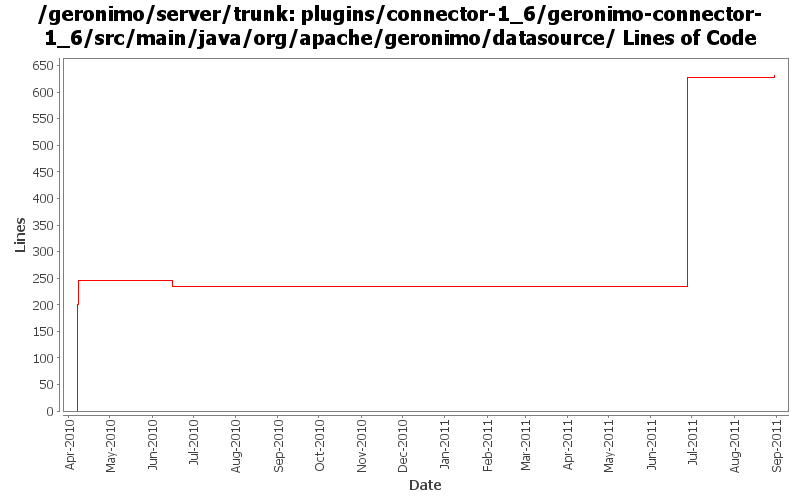

[root]/plugins/connector-1_6/geronimo-connector-1_6/src/main/java/org/apache/geronimo/datasource

| Author | Changes | Lines of Code | Lines per Change |
|---|---|---|---|
| Totals | 11 (100.0%) | 700 (100.0%) | 63.6 |
| djencks | 5 (45.5%) | 439 (62.7%) | 87.8 |
| gawor | 5 (45.5%) | 254 (36.3%) | 50.8 |
| xuhaihong | 1 (9.1%) | 7 (1.0%) | 7.0 |
GERONIMO-6133 The name of NamedXAResourceFactory is not configured while working with DataSource
7 lines of code changed in 1 file:
GERONIMO-5066 Use naming Reference to set up Datasources and use them to get global scope datasources from server to app client
417 lines of code changed in 4 files:
GERONIMO-5380 Allow exposing gbeans as osgi services (or service factories). Replace the specialized code in connector with this new generic code. This is not serialziation compatible with old GBeanInfo and GBeanData
22 lines of code changed in 1 file:
GERONIMO-5113: Support (or at least try to support) transaction isolation level & url properties
52 lines of code changed in 2 files:
GERONIMO-5113: Do little string trimming just in case
1 lines of code changed in 1 file:
GERONIMO-5113: Missed a file in previous commit
195 lines of code changed in 1 file:
GERONIMO-5113: Mostly complete support for @DataSourceDefinition(s) annotations
6 lines of code changed in 1 file: